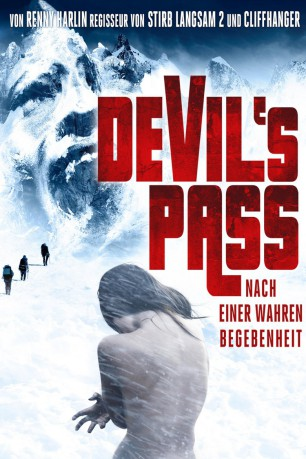

#3081 Devil's Pass
 
 IMDB-Wertung: 5.7 / 10
IMDB-Wertung: 5.7 / 10  Metascore: 49
Metascore: 49 
Fünf amerikanische Studenten wollen einem seit 50 Jahren ungelösten Rätsel auf die Spur kommen. Eine ganze Gruppe erfahrener Bergsteiger stirbt 1959 in einer Februarnacht im Ural am "Berg der Toten". Sie müssen ihr Lager panikartig verlassen haben, denn ihre Zelte wurden von innen aufgerissen. Einige sind fast nackt, ihre Körper weisen schwerste innere Verletzungen auf ohne Spuren äußerer Gewalteinwirkung. Bei einer Leiche fehlt die Zunge. Kleidungsstücke sind radioaktiv verstrahlt. Viele Theorien ranken sich um den Fall, von militärischen Experimenten über Aliens bis zum Yeti. Die Studenten folgen den Spuren der Toten. Sie schlagen an der gleichen Stelle ihr Lager auf, als ihre technischen Geräte plötzlich versagen. Die Verbindung zur Außenwelt ist abgerissen, der Albtraum beginnt ...
Jahr: 2013
Dauer: 100 Minuten
FSK: 16
Land: USA Studio: Aldamisa ReleasingTonspuren: DTS - ,
Untertitel: Deutsch, Englisch,
Auflösung: 1080p (1920x1040) Größe: 5693 MB
Genre: Thriller, Horror, Sci-Fi, Mystery
Regisseur:  Renny Harlin
Renny Harlin
Drehbuch: Vikram Weet
Soundtrack:
Darsteller:
- Holly Goss als Holly King
- Matt Stokoe als Jensen Day
- Luke Albright als John Patrick, JP Hauser Jr.
- Gemma Atkinson als Denise Evers
- Richard Reid als Sgt. Smirnoff
 Jane Perry als Professor Martha Kittles
Jane Perry als Professor Martha Kittles- Ryan Hawley als Andy Thatcher
- Nikolay Butenin als Sergei
- Nelly Nielsen als Alya, 73 Years
- Valeriya Fedorovich als Alya, 20 Years
- Aleksey Kink als Vallik
- Sergey Lobanov als Bartender
- Oleg Kurlov als Man #1
- Dmitriy Miheev als Man #2
- Anton Klimov als Sgt. Smirnoff
- Igor Kulachko als Sgt. Tupelov
- Aleksey Nesterov als Officer
- Leonid Lutvinskiy als Hospital Orderly
- Boris Stepanov als Piotr Karov
- Anastasiya Burdina als Holly Creature
Datei: X:\2013(A-F)\Devil's Pass (2013, FSK16, 1920x1040).mkv seit 22.01.2016
Festplatte: HD 2012(N-Z)-2013(A-H)
 Es gibt insgesamt 127 Filme in der Gruppe '2013(A-F)'
Es gibt insgesamt 127 Filme in der Gruppe '2013(A-F)'